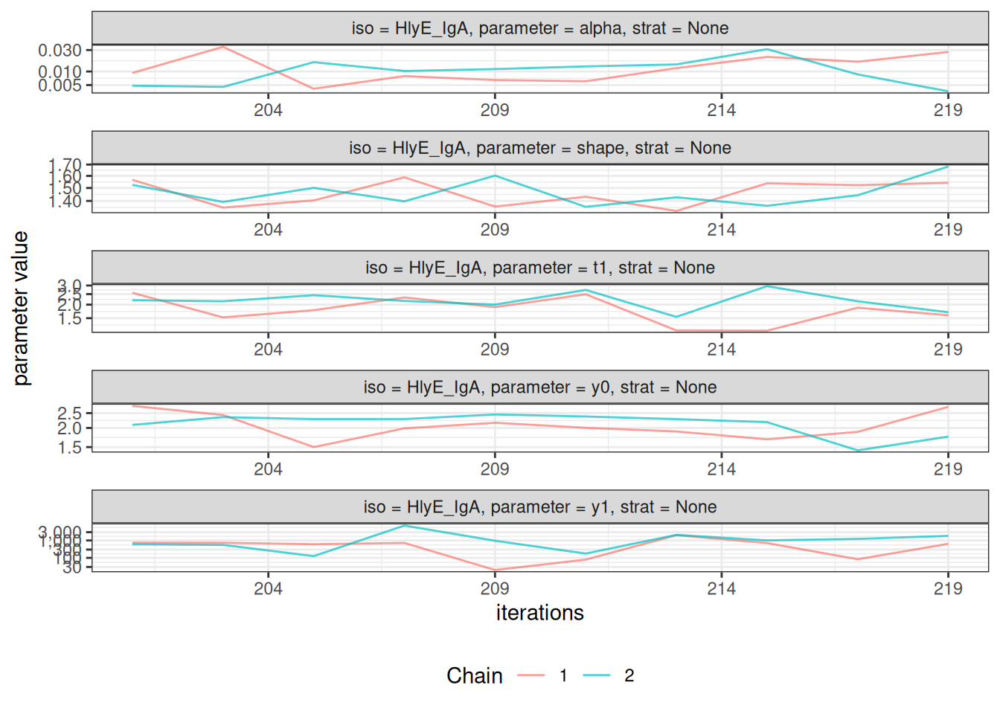
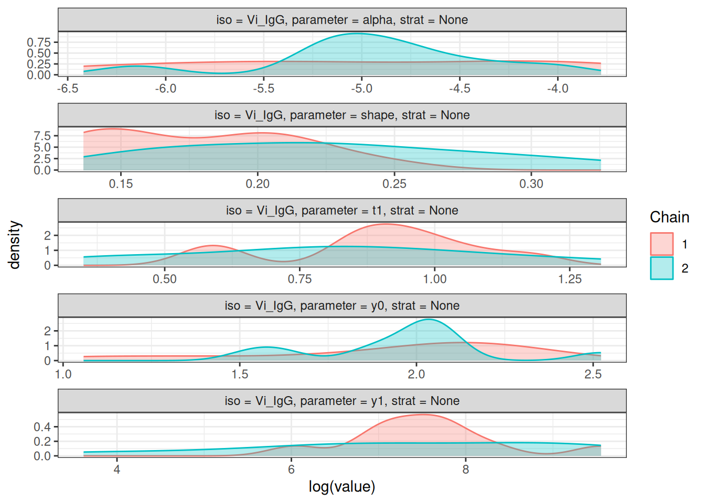
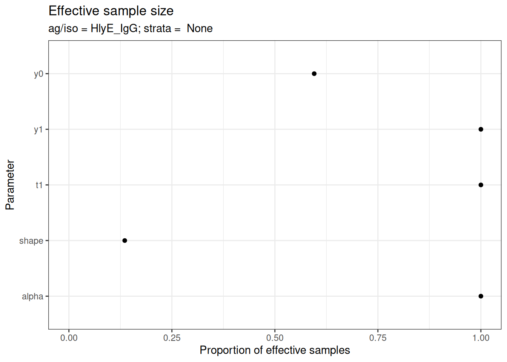

Introduction
The serodynamics package provides tools for modeling longitudinal antibody responses to infection using Bayesian MCMC methods. This vignette demonstrates the main workflow for:
- Loading or simulating case data
- Preparing data for MCMC analysis
- Running the Bayesian model
- Visualizing and interpreting results
Installation
First, ensure you have JAGS installed on your system (required for Bayesian MCMC):
-
Ubuntu/Linux:
sudo apt-get install jags - macOS: Download from JAGS website
- Windows: Download from JAGS website
Then install the package:
# install.packages("pak")
pak::pak("UCD-SERG/serodynamics")Load Required Libraries
Example 1: Using Existing Data
The package includes example data from the SEES Typhoid study in Nepal:
data(nepal_sees)
head(nepal_sees)
#> # A tibble: 6 × 9
#> Country id sample_id bldculres antigen_iso studyvisit dayssincefeveronset
#> <chr> <chr> <chr> <chr> <chr> <chr> <dbl>
#> 1 Nepal sees_n… N000_122 typhi HlyE_IgA 28_days 40
#> 2 Nepal sees_n… N000_122 typhi HlyE_IgG 28_days 40
#> 3 Nepal sees_n… N000_297 typhi HlyE_IgA 3_months 135
#> 4 Nepal sees_n… N000_297 typhi HlyE_IgG 3_months 135
#> 5 Nepal sees_n… N000_372 typhi HlyE_IgA 6_months 171
#> 6 Nepal sees_n… N000_372 typhi HlyE_IgG 6_months 171
#> # ℹ 2 more variables: result <dbl>, visit_num <int>Prepare the Data
Convert the data to a case_data object (nepal_sees already is a case_data object, but we can reconvert it just to demonstrate).
case_data <- as_case_data(
nepal_sees,
id_var = "id",
time_in_days = "dayssincefeveronset",
value_var = "result",
biomarker_var = "antigen_iso"
)
# View the structure
head(case_data)
#> # A tibble: 6 × 9
#> Country id sample_id bldculres antigen_iso studyvisit dayssincefeveronset
#> <chr> <chr> <chr> <chr> <chr> <chr> <dbl>
#> 1 Nepal sees_n… N000_122 typhi HlyE_IgA 28_days 40
#> 2 Nepal sees_n… N000_122 typhi HlyE_IgG 28_days 40
#> 3 Nepal sees_n… N000_297 typhi HlyE_IgA 3_months 135
#> 4 Nepal sees_n… N000_297 typhi HlyE_IgG 3_months 135
#> 5 Nepal sees_n… N000_372 typhi HlyE_IgA 6_months 171
#> 6 Nepal sees_n… N000_372 typhi HlyE_IgG 6_months 171
#> # ℹ 2 more variables: result <dbl>, visit_num <int>Visualize the Raw Data
autoplot(case_data)
Example 2: Simulating Data
You can also simulate case data using antibody curve parameters:
set.seed(123)
# Use typhoid curve parameters from serocalculator
simulated_data <- sim_case_data(
n = 50, # Number of cases to simulate
curve_params = serocalculator::typhoid_curves_nostrat_100,
max_n_obs = 6, # Maximum observations per case
followup_interval = 14 # Days between follow-up visits
)
head(simulated_data)
#> # A tibble: 6 × 11
#> id visit_num timeindays iter antigen_iso y0 y1 t1 alpha r
#> <chr> <int> <dbl> <int> <fct> <dbl> <dbl> <dbl> <dbl> <dbl>
#> 1 1 1 0 89 HlyE_IgA 0.666 47.1 7.18 5.22e-4 1.56
#> 2 1 1 0 89 HlyE_IgG 3.52 266. 5.60 1.25e-3 1.53
#> 3 1 1 0 89 LPS_IgA 1.77 2071. 1.71 2.21e-5 3.45
#> 4 1 1 0 89 LPS_IgG 0.200 234. 5.30 1.69e-3 1.28
#> 5 1 1 0 89 Vi_IgG 1.66 543. 8.37 3.72e-5 1.26
#> 6 1 2 14 89 HlyE_IgA 0.666 47.1 7.18 5.22e-4 1.56
#> # ℹ 1 more variable: value <dbl>
autoplot(simulated_data)
Running the Bayesian Model
The main function run_mod() fits a Bayesian MCMC model to estimate antibody dynamic curve parameters:
-
y0: Baseline antibody concentration -
y1: Peak antibody concentration
-
t1: Time to peak -
shape: Shape parameter -
alpha: Decay rate
# Note: This example uses reduced iterations for demonstration
# For actual analysis, use larger values (e.g., nmc=1000, niter=2000)
fitted_model <- run_mod(
data = simulated_data,
file_mod = serodynamics_example("model.jags"),
nchain = 2, # Number of MCMC chains
nadapt = 100, # Adaptation iterations
nburn = 100, # Burn-in iterations
nmc = 10, # Samples per chain (use 1000+ for real analysis)
niter = 20 # Total iterations (use 2000+ for real analysis)
)
#> Calling 2 simulations using the parallel method...
#> Following the progress of chain 1 (the program will wait for all chains
#> to finish before continuing):
#> Welcome to JAGS 4.3.2 on Fri Jan 9 09:57:01 2026
#> JAGS is free software and comes with ABSOLUTELY NO WARRANTY
#> Loading module: basemod: ok
#> Loading module: bugs: ok
#> . . Reading data file data.txt
#> . Compiling model graph
#> Resolving undeclared variables
#> Allocating nodes
#> Graph information:
#> Observed stochastic nodes: 815
#> Unobserved stochastic nodes: 285
#> Total graph size: 14771
#> . Reading parameter file inits1.txt
#> . Initializing model
#> . Adapting 100
#> -------------------------------------------------| 100
#> ++++++++++++++++++++++++++++++++++++++++++++++++++ 100%
#> Adaptation incomplete.
#> . Updating 100
#> -------------------------------------------------| 100
#> ************************************************** 100%
#> . . . . . . Updating 20
#> . . . . Updating 0
#> . Deleting model
#> .
#> All chains have finished
#> Warning: The adaptation phase of one or more models was not completed in 100
#> iterations, so the current samples may not be optimal - try increasing the
#> number of iterations to the "adapt" argument
#> Simulation complete. Reading coda files...
#> Coda files loaded successfully
#> Finished running the simulation
head(fitted_model)
#> # A tibble: 6 × 7
#> Iteration Chain Parameter Iso_type Stratification Subject value
#> <int> <int> <chr> <chr> <chr> <chr> <dbl>
#> 1 1 1 alpha HlyE_IgA None 1 0.0114
#> 2 2 1 alpha HlyE_IgA None 1 0.0114
#> 3 3 1 alpha HlyE_IgA None 1 0.0114
#> 4 4 1 alpha HlyE_IgA None 1 0.0114
#> 5 5 1 alpha HlyE_IgA None 1 0.0217
#> 6 6 1 alpha HlyE_IgA None 1 0.0217Model Diagnostics
After fitting the model, check convergence diagnostics:
# Trace plots to assess chain mixing
plot_jags_trace(fitted_model)
#> $None
#> $None$HlyE_IgA
#>
#> $None$HlyE_IgG
#>
#> $None$LPS_IgA
#>
#> $None$LPS_IgG
#>
#> $None$Vi_IgG
# Density plots of posterior distributions
plot_jags_dens(fitted_model)
#> $None
#> $None$HlyE_IgA
#>
#> $None$HlyE_IgG
#>
#> $None$LPS_IgA
#>
#> $None$LPS_IgG
#>
#> $None$Vi_IgG
# Rhat statistics (values near 1.0 indicate convergence)
plot_jags_Rhat(fitted_model)
#> $None
#> $None$HlyE_IgA
#>
#> $None$HlyE_IgG
#>
#> $None$LPS_IgA
#>
#> $None$LPS_IgG
#>
#> $None$Vi_IgG
# Effective sample size
plot_jags_effect(fitted_model)
#> $None
#> $None$HlyE_IgA
#>
#> $None$HlyE_IgG
#>
#> $None$LPS_IgA
#>
#> $None$LPS_IgG
#>
#> $None$Vi_IgG
Visualizing Fitted Curves
Plot the predicted antibody curves with credible intervals:
plot_predicted_curve(
fitted_model,
ids = serocalculator::ids(simulated_data)[1],
antigen_iso = simulated_data$antigen_iso[1]
)
Post-Processing Results
Extract and summarize the posterior estimates:
# Summarize parameter estimates
summary_stats <- post_summ(fitted_model)
print(summary_stats)
#> # A tibble: 25 × 11
#> Iso_type Parameter Stratification Mean SD Median `2.5%` `25.0%`
#> <chr> <chr> <chr> <dbl> <dbl> <dbl> <dbl> <dbl>
#> 1 HlyE_IgA alpha None 0.0132 9.15e-3 1.08e-2 3.87e-3 6.37e-3
#> 2 HlyE_IgA shape None 1.47 1.01e-1 1.44e+0 1.34e+0 1.39e+0
#> 3 HlyE_IgA t1 None 2.02 4.93e-1 2.07e+0 1.15e+0 1.67e+0
#> 4 HlyE_IgA y0 None 2.13 3.68e-1 2.17e+0 1.46e+0 1.89e+0
#> 5 HlyE_IgA y1 None 1105. 1.55e+3 7.14e+2 4.82e+1 4.59e+2
#> 6 HlyE_IgG alpha None 0.00956 8.14e-3 6.50e-3 1.77e-3 3.22e-3
#> 7 HlyE_IgG shape None 1.36 9.20e-2 1.38e+0 1.25e+0 1.28e+0
#> 8 HlyE_IgG t1 None 1.94 4.89e-1 1.80e+0 1.35e+0 1.57e+0
#> 9 HlyE_IgG y0 None 2.85 7.70e-1 2.60e+0 2.01e+0 2.49e+0
#> 10 HlyE_IgG y1 None 833. 1.19e+3 2.95e+2 7.01e+1 2.42e+2
#> # ℹ 15 more rows
#> # ℹ 3 more variables: `50.0%` <dbl>, `75.0%` <dbl>, `97.5%` <dbl>Working with Stratified Data
You can stratify the analysis by a grouping variable:
# Create stratified data
strat1 <- sim_case_data(
n = 30,
curve_params = serocalculator::typhoid_curves_nostrat_100
) |>
mutate(pathogen = "Typhoid")
strat2 <- sim_case_data(
n = 30,
curve_params = serocalculator::typhoid_curves_nostrat_100
) |>
mutate(pathogen = "Paratyphoid")
stratified_data <- bind_rows(strat1, strat2)
# Fit model with stratification
fitted_stratified <- run_mod(
data = stratified_data,
file_mod = serodynamics_example("model.jags"),
nchain = 2,
nadapt = 100,
nburn = 100,
nmc = 10,
niter = 20,
strat = "pathogen" # Specify stratification variable
)
#> Calling 2 simulations using the parallel method...
#> Following the progress of chain 1 (the program will wait for all chains
#> to finish before continuing):
#> Welcome to JAGS 4.3.2 on Fri Jan 9 09:57:15 2026
#> JAGS is free software and comes with ABSOLUTELY NO WARRANTY
#> Loading module: basemod: ok
#> Loading module: bugs: ok
#> . . Reading data file data.txt
#> . Compiling model graph
#> Resolving undeclared variables
#> Allocating nodes
#> Graph information:
#> Observed stochastic nodes: 775
#> Unobserved stochastic nodes: 185
#> Total graph size: 12303
#> . Reading parameter file inits1.txt
#> . Initializing model
#> . Adapting 100
#> -------------------------------------------------| 100
#> ++++++++++++++++++++++++++++++++++++++++++++++++++ 100%
#> Adaptation incomplete.
#> . Updating 100
#> -------------------------------------------------| 100
#> ************************************************** 100%
#> . . . . . . Updating 20
#> . . . . Updating 0
#> . Deleting model
#> .
#> All chains have finished
#> Warning: The adaptation phase of one or more models was not completed in 100
#> iterations, so the current samples may not be optimal - try increasing the
#> number of iterations to the "adapt" argument
#> Simulation complete. Reading coda files...
#> Coda files loaded successfully
#> Finished running the simulation
#> Calling 2 simulations using the parallel method...
#> Following the progress of chain 1 (the program will wait for all chains
#> to finish before continuing):
#> Welcome to JAGS 4.3.2 on Fri Jan 9 09:57:17 2026
#> JAGS is free software and comes with ABSOLUTELY NO WARRANTY
#> Loading module: basemod: ok
#> Loading module: bugs: ok
#> . . Reading data file data.txt
#> . Compiling model graph
#> Resolving undeclared variables
#> Allocating nodes
#> Graph information:
#> Observed stochastic nodes: 760
#> Unobserved stochastic nodes: 185
#> Total graph size: 12135
#> . Reading parameter file inits1.txt
#> . Initializing model
#> . Adapting 100
#> -------------------------------------------------| 100
#> ++++++++++++++++++++++++++++++++++++++++++++++++++ 100%
#> Adaptation incomplete.
#> . Updating 100
#> -------------------------------------------------| 100
#> ************************************************** 100%
#> . . . . . . Updating 20
#> . . . . Updating 0
#> . Deleting model
#> .
#> All chains have finished
#> Warning: The adaptation phase of one or more models was not completed in 100
#> iterations, so the current samples may not be optimal - try increasing the
#> number of iterations to the "adapt" argument
#> Simulation complete. Reading coda files...
#> Coda files loaded successfully
#> Finished running the simulationNext Steps
- See the function reference for complete API documentation
- Check out example datasets:
?nepal_sees,?nepal_sees_jags_output
Session Info
sessioninfo::session_info()
#> ─ Session info ───────────────────────────────────────────────────────────────
#> setting value
#> version R version 4.5.2 (2025-10-31)
#> os Ubuntu 24.04.3 LTS
#> system x86_64, linux-gnu
#> ui X11
#> language en-US
#> collate C.UTF-8
#> ctype C.UTF-8
#> tz UTC
#> date 2026-01-09
#> pandoc 3.1.11 @ /opt/hostedtoolcache/pandoc/3.1.11/x64/ (via rmarkdown)
#> quarto 1.8.26 @ /usr/local/bin/quarto
#>
#> ─ Packages ───────────────────────────────────────────────────────────────────
#> package * version date (UTC) lib source
#> cli 3.6.5 2025-04-23 [1] CRAN (R 4.5.2)
#> coda 0.19-4.1 2024-01-31 [1] CRAN (R 4.5.2)
#> codetools 0.2-20 2024-03-31 [3] CRAN (R 4.5.2)
#> digest 0.6.39 2025-11-19 [1] CRAN (R 4.5.2)
#> doParallel 1.0.17 2022-02-07 [1] CRAN (R 4.5.2)
#> dplyr * 1.1.4 2023-11-17 [1] CRAN (R 4.5.2)
#> evaluate 1.0.5 2025-08-27 [1] CRAN (R 4.5.2)
#> farver 2.1.2 2024-05-13 [1] CRAN (R 4.5.2)
#> fastmap 1.2.0 2024-05-15 [1] CRAN (R 4.5.2)
#> foreach 1.5.2 2022-02-02 [1] CRAN (R 4.5.2)
#> fs 1.6.6 2025-04-12 [1] CRAN (R 4.5.2)
#> generics 0.1.4 2025-05-09 [1] CRAN (R 4.5.2)
#> GGally 2.4.0 2025-08-23 [1] CRAN (R 4.5.2)
#> ggmcmc 1.5.1.2 2025-10-02 [1] CRAN (R 4.5.2)
#> ggplot2 * 4.0.1 2025-11-14 [1] CRAN (R 4.5.2)
#> ggstats 0.12.0 2025-12-22 [1] CRAN (R 4.5.2)
#> glue 1.8.0 2024-09-30 [1] CRAN (R 4.5.2)
#> gtable 0.3.6 2024-10-25 [1] CRAN (R 4.5.2)
#> htmltools 0.5.9 2025-12-04 [1] CRAN (R 4.5.2)
#> iterators 1.0.14 2022-02-05 [1] CRAN (R 4.5.2)
#> jsonlite 2.0.0 2025-03-27 [1] CRAN (R 4.5.2)
#> knitr 1.51 2025-12-20 [1] CRAN (R 4.5.2)
#> labeling 0.4.3 2023-08-29 [1] CRAN (R 4.5.2)
#> lattice 0.22-7 2025-04-02 [3] CRAN (R 4.5.2)
#> lifecycle 1.0.5 2026-01-08 [1] CRAN (R 4.5.2)
#> magrittr 2.0.4 2025-09-12 [1] CRAN (R 4.5.2)
#> MASS 7.3-65 2025-02-28 [3] CRAN (R 4.5.2)
#> otel 0.2.0 2025-08-29 [1] CRAN (R 4.5.2)
#> pillar 1.11.1 2025-09-17 [1] CRAN (R 4.5.2)
#> pkgconfig 2.0.3 2019-09-22 [1] CRAN (R 4.5.2)
#> purrr 1.2.0 2025-11-04 [1] CRAN (R 4.5.2)
#> R6 2.6.1 2025-02-15 [1] CRAN (R 4.5.2)
#> RColorBrewer 1.1-3 2022-04-03 [1] CRAN (R 4.5.2)
#> Rcpp 1.1.0 2025-07-02 [1] CRAN (R 4.5.2)
#> rlang 1.1.6 2025-04-11 [1] CRAN (R 4.5.2)
#> rmarkdown 2.30 2025-09-28 [1] CRAN (R 4.5.2)
#> rngtools 1.5.2 2021-09-20 [1] CRAN (R 4.5.2)
#> runjags * 2.2.2-5 2025-04-09 [1] CRAN (R 4.5.2)
#> S7 0.2.1 2025-11-14 [1] CRAN (R 4.5.2)
#> scales 1.4.0 2025-04-24 [1] CRAN (R 4.5.2)
#> serocalculator 1.3.0.9061 2025-12-16 [1] Github (ucd-serg/serocalculator@4fc3b75)
#> serodynamics * 0.0.0.9047 2026-01-09 [1] local
#> sessioninfo 1.2.3 2025-02-05 [1] any (@1.2.3)
#> tibble 3.3.0 2025-06-08 [1] CRAN (R 4.5.2)
#> tidyr 1.3.2 2025-12-19 [1] CRAN (R 4.5.2)
#> tidyselect 1.2.1 2024-03-11 [1] CRAN (R 4.5.2)
#> utf8 1.2.6 2025-06-08 [1] CRAN (R 4.5.2)
#> vctrs 0.6.5 2023-12-01 [1] CRAN (R 4.5.2)
#> withr 3.0.2 2024-10-28 [1] CRAN (R 4.5.2)
#> xfun 0.55 2025-12-16 [1] CRAN (R 4.5.2)
#> yaml 2.3.12 2025-12-10 [1] CRAN (R 4.5.2)
#>
#> [1] /home/runner/work/_temp/Library
#> [2] /opt/R/4.5.2/lib/R/site-library
#> [3] /opt/R/4.5.2/lib/R/library
#> * ── Packages attached to the search path.
#>
#> ──────────────────────────────────────────────────────────────────────────────